High Energy Techno — OCC Records Podcast #191
Techno
Niko Bo — DJ & Producer
Raw driving energy for techno and psytrance floors — intentional, arc-driven journeys for ecstatic dance. Two worlds. One artist.
01 Upcoming
Casa de la Luna · Medellín, Colombia
Santa Elena · Antioquia, Colombia
Medellín, Colombia · Niko opens or closes
02 Artist
DJ and producer from Germany. Raw driving energy for techno and psytrance floors — intentional, arc-driven journeys for ecstatic dance. Two worlds. One artist.
On the harder side, Niko plays techno — acid, bounce, peak, hard dance and neo rave — and psytrance in both progressive and full-on flavors. His club and festival sets are built for dancefloors that want to go deep and go hard: layered, hypnotic, relentless in the best possible way.
At ecstatic dance events, the palette shifts entirely. Niko crafts intentional journeys through genre, vibe and emotion — moving through organic and downtempo openings, rising through tribal house, latin house and progressive house, accelerating into psytrance, drum & bass and peak-hour intensity, before landing softly with medicine music and mantra-infused closes. Each set has a clear, intense climax and a carefully held arc.
Beyond the decks, Niko is one of the leading figures bringing ecstatic dance to Medellín and Colombia. He founded the ECSTASÍA event series and the Medellín Ecstatic Dance Festival — whose first edition in 2025 sold out, establishing it as a landmark event on the Colombian conscious dance scene.
In the studio, Niko writes and produces original music that reflects both sides of his world — the driving pulse of techno and psytrance alongside the organic textures of medicine music and downtempo. His productions live in the space between the club and the ceremony.
The club set
The ceremony set
03 Listen
Techno
Full On & Progressive Psytrance
Medicine · Tribal · Downtempo · Organic House · Psytrance · D&B
Tribal · Oriental · Downtempo · Afro · Progressive House · Psytrance
04 Productions
Original track — Acid Techno
Original track
05 Ecstatic Dance
Ecstatic Dance is a conscious movement gathering held without alcohol or other substances — a space where people connect deeply with themselves, the music and the moment. The format includes shared agreements: no phones, no talking and no shoes on the dancefloor. Guided by intentional music arcs, each event takes participants on a journey from stillness to peak energy and back to rest. Ecstatic Dance has been spreading across the globe in recent years as a powerful intersection of music, movement and community.
Niko Bo is one of the leading figures bringing Ecstatic Dance to Medellín and Colombia. He founded ECSTASÍA — an ongoing event series that has become a cornerstone of the conscious dance scene in Medellín — and the Medellín Ecstatic Dance Festival, whose first edition in 2025 sold out, establishing it as a landmark event on the Colombian calendar.
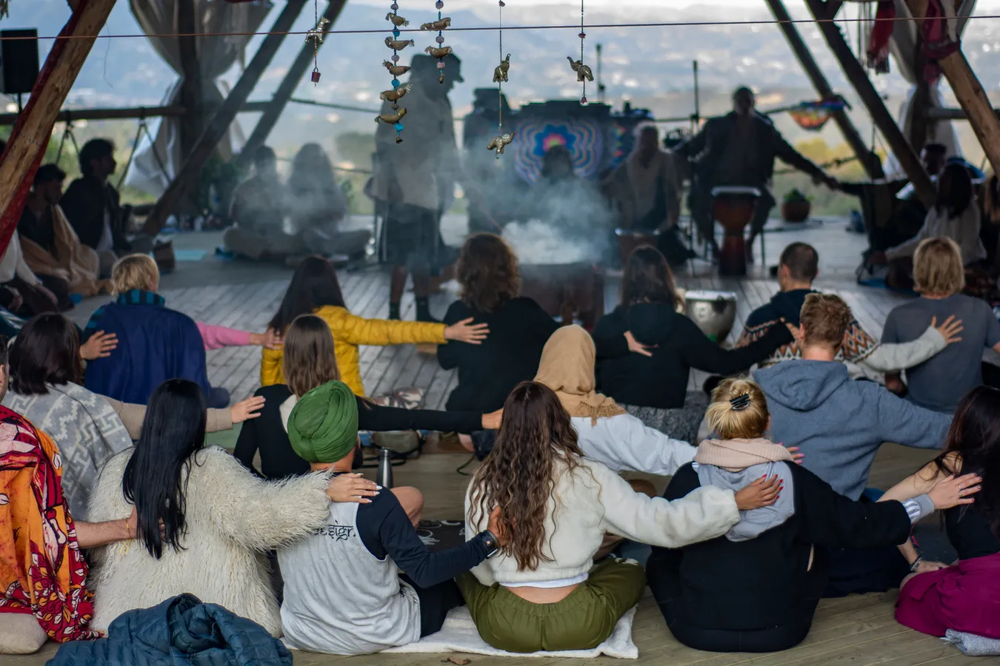
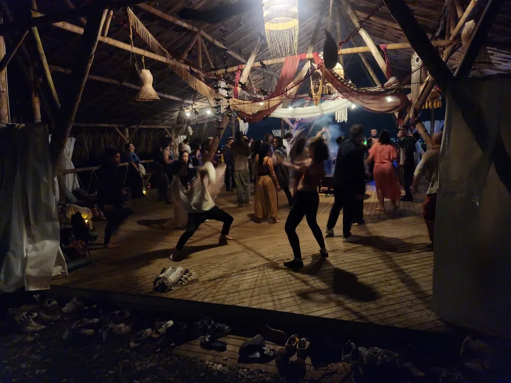
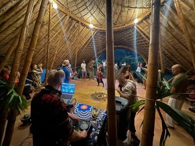
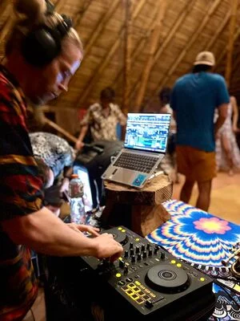
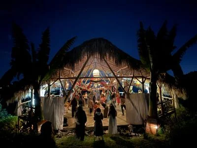
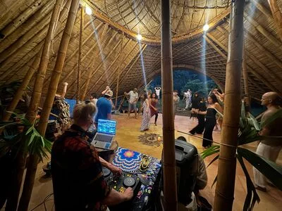
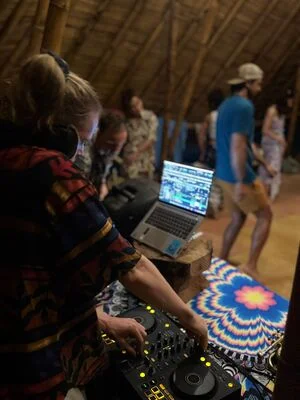
06 Press kit
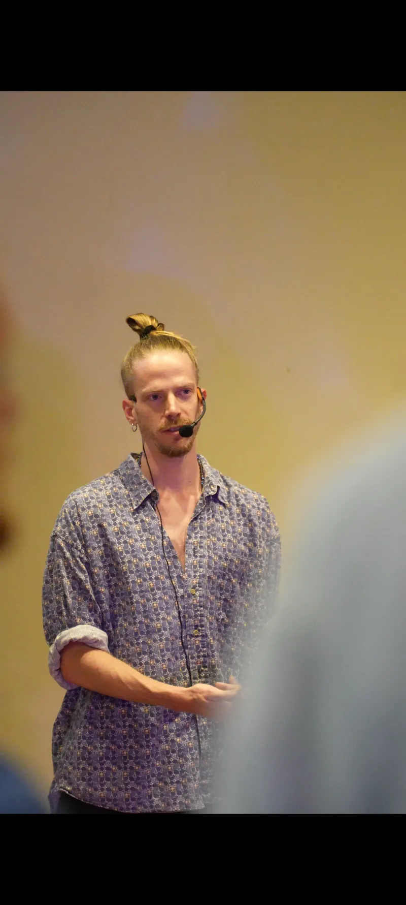
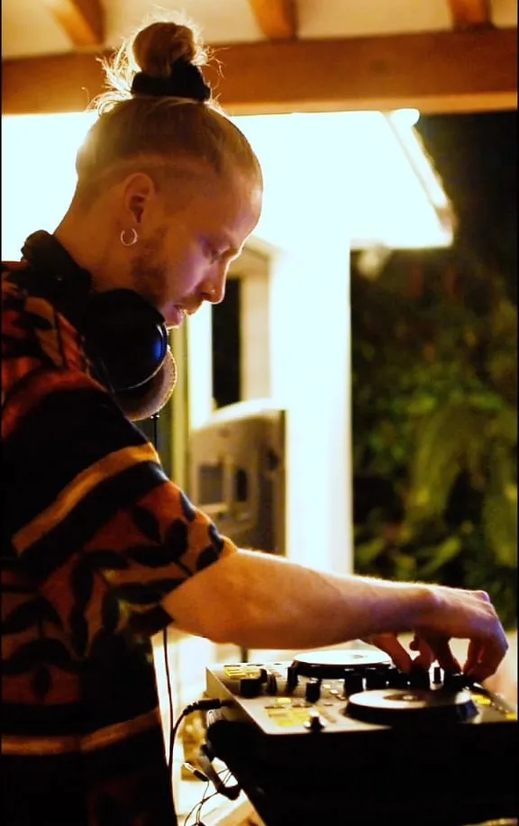
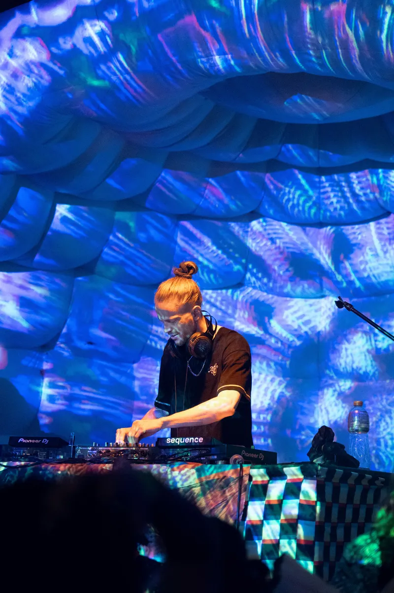
Hi-res files available on request — get in touch.
07 Technical
Holistic Coaching
1:1 coaching, body–mind training and group experiences — all rooted in the same invitation: slow down, go inward, and reconnect.
Breathe with it — six breaths a minute
Explore
Deep, personal work — one on one. Clarity, transformation, burnout recovery, relationship coaching, body–mind integration and psychedelic integration.
02Men's circles, cacao ceremonies, ecstatic dance, retreats, workshops, kirtan and sharing circles — transformation held in community.
03Hatha-Vinyasa yoga, YOQI Qigong and somatic movement — practices that bring you back into your body and cultivate lasting energy and presence.
About
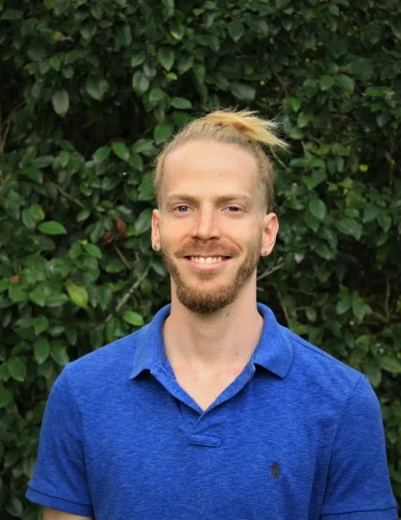
Ten years ago Niko was pursuing a high-status career in Geneva — driven by ambition and disconnected from himself. Today he wears sandals and is often in nature. He meditates, dances and sings. He travels slowly, hosts retreats and walks alongside people as their coach.
In 2017, after a moment of deep clarity, he let go of all previous ambitions and committed to a radical period of exploration — traveling the world, diving into yoga, meditation, Qigong and authentic relating.
"I realized that the most important things for me are connection, community, nature and creativity."
Today his work is rooted in a simple philosophy: healing requires integrating the whole person — mind, body, heart and the creative life force. He draws on Yoga, Tantra, Qigong, Taoism and Buddhism.
Get in touch
Ready to explore what's possible? Reach out and let's connect.
hello@nikobo.art1:1 Coaching
My 1:1 coaching programs help you get in touch with what's really important.
The real question is not whether life exists after death. The real question is whether you are alive before death.— Osho
Who this is for
You're functioning, showing up, getting things done — but part of you feels exhausted and disconnected.
Have you been pushing through for years and reached a point where your nervous system just can't anymore?
Are you craving clarity, real connection, and a deeper sense of inner peace — not just the next goal?
What I offer
For those whose minds are always on — too many inputs, too many decisions, too little stillness. Clarity Coaching is about cutting through the noise: getting honest about what you actually want, what's draining you, and what decisions are being made by default rather than design.
When the pace has been relentless for too long, the system gives out. This work goes beyond rest — it involves understanding the patterns, beliefs and identities that made burning out feel inevitable, so it doesn't just happen again.
Exploring the full spectrum of how you relate — to partners, to collaborators, to yourself. Whether you're navigating a difficult dynamic, a transition, or simply a longing for deeper intimacy and honesty in your connections, this is a space to look clearly.
We integrate somatic awareness into the work — because the body holds what the mind alone cannot resolve. This draws on breath, movement and nervous system tools to create real, felt shifts rather than intellectual understanding alone.
The container for all of it: accompanying deep processes of change, moving from who you've been to who you're becoming.
For those who have worked with plant medicines or psychedelics — a careful, informed space to bring those experiences meaningfully into daily life.
How I work
My greatest strength as a coach is that I can be both action-oriented and being-oriented.
I can explore your depth with you, accompanying a process of profound insight and transformation — and I can also be very hands-on, making things concrete and tangible, supporting action to achieve real change.
What we draw on
What becomes possible
An embodied, authentic & confident self
Greater clarity & grounded decision-making
Increased self-love
Inner peace & deep rest
Healthier relationships — to self and others
This is only for you if you are willing to slow down long enough to actually look at what's driving you. If you're after tactics, productivity frameworks or a better morning routine, there are other coaches for that.
This is for you if you suspect that the real leverage isn't in working harder or smarter — but in becoming clearer about who you are and what actually matters to you. If you've tasted success and found it quieter than expected, this is for you.
— Niko
In their words
I came in looking for tactics and left with something better — actual clarity about what I want. Niko doesn't rush the process, and that's exactly why it worked.
— R.M., Clarity Coaching
I'd been running on empty for years and didn't know how to stop. Niko held space for the burnout without trying to fix me — that's what actually let things shift.
— S.T., Burnout Recovery
What's different about working with Niko is the body work. We'd talk, then drop into breath or movement, and things would land in a way that pure conversation never reached.
— A.K., Body–Mind Coaching
Ready to begin?
A free 45-minute session — part conversation, part mini coaching. We explore what's actually going on for you, get to know each other, and find out whether we're a good match. I won't try to sell anything.
hello@nikobo.artCommunity & Ritual
Some of the deepest shifts happen not in one-on-one work, but in the field of the group — in the presence of others who are also showing up honestly.
No agenda · no fixing · just men being real
A brave space where men come together to share authentically and reconnect with their deeper selves and purpose.
In a culture that rarely gives men permission to be vulnerable, uncertain or lost, the men's circle offers something rare: a held space to speak truth, be witnessed, and discover that the things you thought were only your problem are deeply human.
Heart-opening · ceremonial · substance-gentle
Sacred plant medicine gatherings with music, movement and meditation — spaces to open the heart within a held container.
Cacao is a gentle, non-psychedelic heart-opener that has been used ceremonially for thousands of years. These gatherings combine intention-setting, breathwork, dance, sharing and silence into a journey that leaves people feeling more connected — to themselves and to each other.
Founder — ECSTASÍA & Medellín Ecstatic Dance Festival
Free-form, music-guided dance journeys that release stress, unlock joy and move energy through the body.
The format is simple: no phones, no shoes, no talking on the dancefloor. No steps to learn. Just you and the music and your body's own intelligence. Niko crafts intentional arcs through genre, vibe and emotion — from grounding openers through building energy to peak, then landing gently back to stillness.
Multi-day · immersive · often in nature
Multi-day immersions — spaces for deep rest, real connection and community.
Retreats weave together yoga, meditation, Qigong, cacao, ecstatic dance, coaching circles and shared silence into an experience that simply cannot be replicated in a single session. People arrive with a lot on their minds and leave lighter.
Practical · experiential · short format
Shorter-format group sessions offered at festivals, conferences and conscious events — on topics including authentic relating, nervous system regulation, somatic movement, and the art of slowing down.
These workshops are designed to be immediately practical and experiential, not just informational.
Offered seasonally · no experience needed
Call-and-response devotional singing rooted in the Indian tradition — accessible to everyone, no musical experience needed.
Something happens when people sing together: the analytical mind quiets, the chest opens, and a sense of shared aliveness arises that is hard to describe and impossible to forget.
Talking-stick principles · authentic relating
Structured spaces for honest conversation and mutual witnessing.
Not therapy, not a workshop, not casual conversation. A middle space where people slow down enough to actually say what's true, and actually listen.
Join the community
Interested in any of these offerings? Reach out and let's talk.
hello@nikobo.artBody & Mind Training
Most of what we call thinking is the body trying to get our attention. These practices teach you to listen — and to use that intelligence.
A dynamic practice that links breath with movement, cultivating strength, flexibility and a quality of inner attention that carries well beyond the mat.
Niko trained 200 hours in Hatha-Vinyasa at Krishna Village, Australia, and has been practicing for over a decade. Sessions can range from slow and restorative to strong and energizing — adapted to what the body and the moment call for. Available as private sessions, group classes and integrated into retreats.
An ancient Chinese energy practice that cultivates life force (qi) through slow, flowing movement, breath and visualization.
Where yoga builds and stretches, Qigong circulates and clears — it is one of the most effective practices for nervous system regulation, stress recovery and sustained vitality. Niko is a certified YOQI Associate Instructor, trained in the lineage of Master Mingtong Gu. These sessions are gentle enough for anyone and profound enough to change how you move through the world.
Somatic practices work with the intelligence of sensation — learning to read the body's signals, release stored tension and develop a felt sense of groundedness and safety.
This includes elements of authentic movement, breathwork, shaking and trauma-informed body-awareness exercises. Often integrated into 1:1 coaching work, and also offered as standalone sessions for those who want to develop a deeper relationship with their body outside of a talk-based format.
Start moving
Private sessions, group classes and retreat integration available. Get in touch to find out what's on.
hello@nikobo.art